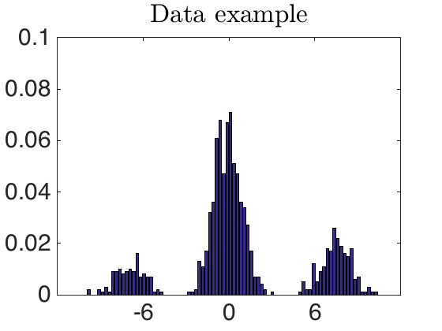
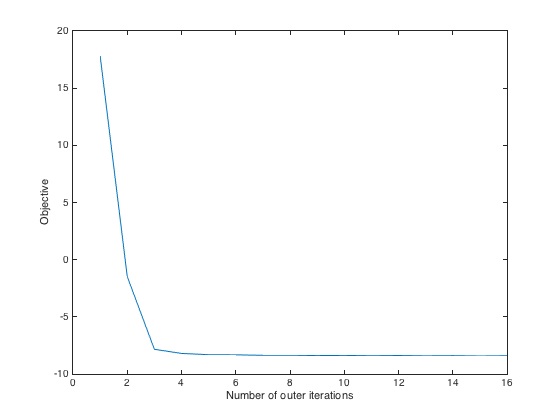
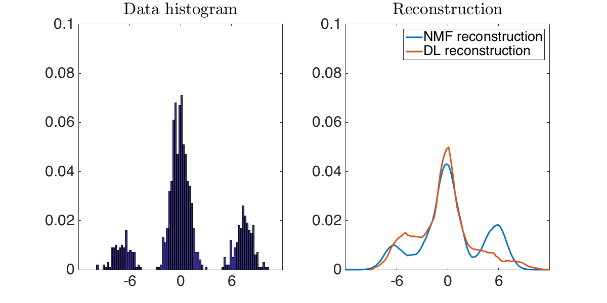

Wasserstein NMF on histograms representation of mixtures of gaussians
This script is intended as a usage example of the Wasserstein Dictionary Toolbox, it reproduces the experiment in the introduction of [paper]
Contents
Generate the data
ndata=100; % number of mixtures niidsample=1000; % number of sample for each mixture ndiscretize=100; % number of histogram bins minVal=-12; maxVal=12; x=linspace(minVal,maxVal,ndiscretize); % value of the histograms bins mu=[-6;0;6]; % mean values for the Gaussians means shiftVariance=2*eye(3); % variance of the Gaussians means mean=mvnrnd(mu,shiftVariance,ndata)'; % generate the gaussian means p=rand(3,ndata); % generate the mixture weights sigma=1; % variance of the Gaussians data=zeros(ndiscretize,ndata); % preallocate memory for i=1:ndata distrib=gmdistribution(mean(:,i),sigma,p(:,i)); % generate a mixture of gaussians distribution a=random(distrib,niidsample); % sample the distribution data(:,i)=hist(a(a>minVal&a<maxVal),x)'; % gather samples in a histogram end data=bsxfun(@rdivide,data,sum(data)); % normalize the data
Visualize the data
minY=0; maxY=.1; YtickStep=.02; i=1; fontSize=30; lineWidth=3; bar(x,data(:,i)) set(gca,'FontSize',fontSize) axis([minVal, maxVal, minY, maxY]) set(gca,'yTick',minY:YtickStep:maxY) set(gca,'xTick',mu) set(gca,'defaulttextinterpreter','latex'); title('Data example')
Build the cost matrix
M=abs(bsxfun(@minus,x',x)); M=M/median(M(:));
Set the parameters of wasserstein_DL
options.stop=1e-3;
options.verbose=0;
options.alpha=0.5;
options.Kmultiplication='symmetric';
options.GPU=0;
k=3;
gamma=1/50;
wassersteinOrder=1;
Perform Wasserstein DL
options.alpha=0.5; options.D_step_stop=1e-7; options.lambda_step_stop=1e-7; tic; [D_DL, lambda_DL, objectives]=wasserstein_DL(data,k,M.^wassersteinOrder,gamma,0,0,options); toc plot(objectives); xlabel('Number of outer iterations') ylabel('Objective')
Elapsed time is 5.045597 seconds.

Visualize the dictionary
minY=floor(min(D_DL(:)*100))/100; plot(x,bsxfun(@rdivide,D_DL,sum(abs(D_DL))),'LineWidth',lineWidth) set(gca,'FontSize',fontSize) axis([minVal, maxVal, minY, maxY]) set(gca,'yTick',minY:YtickStep:maxY) set(gca,'xTick',mu) set(gca,'defaulttextinterpreter','latex'); legend('D_1','D_2','D_3'); title('Wasserstein dictionary learning')

Perform Wasserstein NMF
rho1=.1; rho2=.1; options.D_step_stop=5e-5; options.lambda_step_stop=5e-4; tic; [D, lambda, objectives]=wasserstein_DL(data,k,M.^wassersteinOrder,gamma,rho1,rho2,options); toc plot(objectives); xlabel('Number of outer iterations') ylabel('Objective')
Elapsed time is 29.500731 seconds.
Visualize the dictionary
minY=0; plot(x,bsxfun(@rdivide,D,sum(abs(D))),'LineWidth',lineWidth) set(gca,'FontSize',fontSize) axis([minVal, maxVal, minY, maxY]) set(gca,'yTick',minY:YtickStep:maxY) set(gca,'xTick',mu) set(gca,'defaulttextinterpreter','latex'); legend('D_1','D_2','D_3'); title('Wasserstein NMF')

Compare data and reconstruction
width=1200; height=600; figure('Position',[1 1 width height]) minY=0; i=1; subplot(1,2,1) bar(x,data(:,i)) set(gca,'FontSize',3) set(gca,'FontSize',30) axis([minVal, maxVal, minY, maxY]) set(gca,'yTick',minY:YtickStep:maxY) set(gca,'xTick',mu) set(gca,'defaulttextinterpreter','latex'); title('Data histogram') subplot(1,2,2) plot(x,[D*lambda(:,i),D_DL*lambda_DL(:,i)],'LineWidth',lineWidth) set(gca,'FontSize',fontSize) axis([minVal, maxVal, minY, maxY]) set(gca,'yTick',minY:YtickStep:maxY) set(gca,'xTick',mu) set(gca,'defaulttextinterpreter','latex'); legend('NMF reconstruction','DL reconstruction') title('Reconstruction')